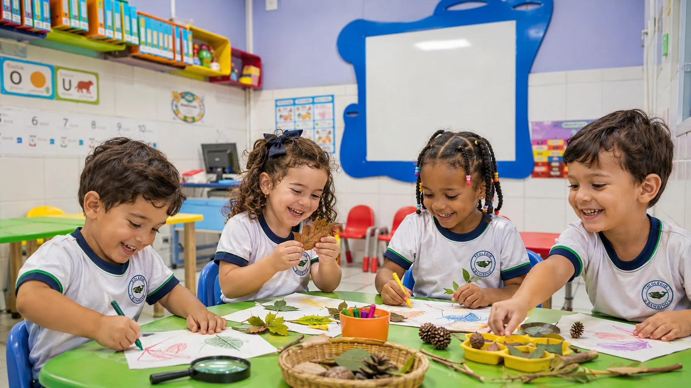
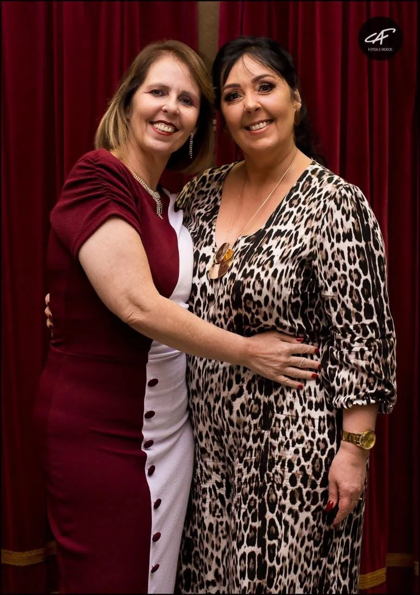

Convivência
Respeito e relações que fazem parte da infância.
O Colégio Bambino iniciou suas atividades em 1987 como escola de Educação Infantil, sob a direção de Adriana Aparecida Perini. Ao longo de sua trajetória, construiu uma relação com gerações de famílias e com o compromisso de respeitar cada etapa do desenvolvimento infantil.

Valorizamos vínculos, convivência, criatividade e respeito às diferenças. Brincadeiras, interações e experiências significativas ajudam a criança a participar, se expressar, descobrir e crescer.
Respeito e relações que fazem parte da infância.
Vivências que ajudam a comunicar, criar e imaginar.
Propostas planejadas para acompanhar cada etapa.
Nossa história de 40 anos se renova no cotidiano: entre tintas, brincadeiras, descobertas e encontros, as crianças desenvolvem a curiosidade e novas maneiras de se expressar.
Ao criar, a criança experimenta, imagina e compartilha ideias.
Investigar a natureza aproxima a aprendizagem do mundo real.
A trajetória do Bambino faz parte de uma história educacional que se ampliou ao longo dos anos e hoje é celebrada junto ao Perini. O ponto de partida continua o mesmo: uma infância vivida com cuidado e oportunidades de aprender.
Adriana Perini e Luciana Perini fazem parte da história e da direção institucional do Bambino e Perini.
Agende uma visitaAdriana Perini e Luciana Perini representam a continuidade dessa trajetória institucional. A fotografia é apresentada integralmente, em respeito à história de ambas.
